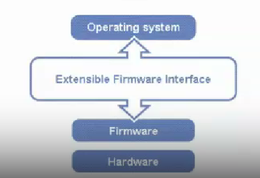

EFI / UEFI
本节目录
EFI / UEFI 简介
在上一节提到，BIOS 主要流行于 1970s 到 1990s，因为计算机硬件设备种类繁多，而 BIOS 只能识别硬件设备，无法识别软件设备，而不再能满足计算机硬件设备日益复杂的需求。因此，1990s 后，出现了 EFI / UEFI。
Intel 提出了，使用 EFI(Extensible Firmware Interface)取代 BlOS interface 。
2005 年，Intel 再次提出用 UEFI(Unified Extensible Firmware Interface)取代 EFI。
下图展示了 EFI 的架构位置：

EFI / UEFI 与 BIOS 的区别
首先，对于编程语言来说，BIOS 主要使用汇编语言，而 EFI 主要使用 C 语言。EFI 是用模块化的思想，借助动态链接的形式构建的系统，较 BIOS 而言更易于实现，容错和纠错特性更强，缩短了研发时间。
其次，对于 BIOS 具有的三大任务：
- 初始化硬件
- 提供硬件的软件抽象
- 启动操作系统
UEFI 具有三大优势：
- 标准接口
- 开放统一
- 开源
同时，EFI 运行于 32 位或 64 位模式，突破了传统 16 位代码的寻址能力。而 BIOS 的硬件服务程序都以 16 位代码的形式存在，这就给运行于增强模式的操作系统访问其服务造成了困难。
而且，EFI 系统下的驱动并不是由可以直接运行在 CPU 上的代码组成的，而是用 EFIByte Code 编写而成的。这是一组专用于 EFI 驱动的虚拟机器语言，必须在 EFI 驱动运行环境下被解释运行。这就保证了充分的向下兼容性。
因此，EFI 和 UEFI 才能够被广泛接受。
EFI / UEFI 的结构
更加具体的 EFI 的架构位置如下图所示：

EFI / UEFI 当前进展
当前，对于 UEFI 应用的一个典型例子是 LinuxBoot：

感兴趣的同学们可以参考：